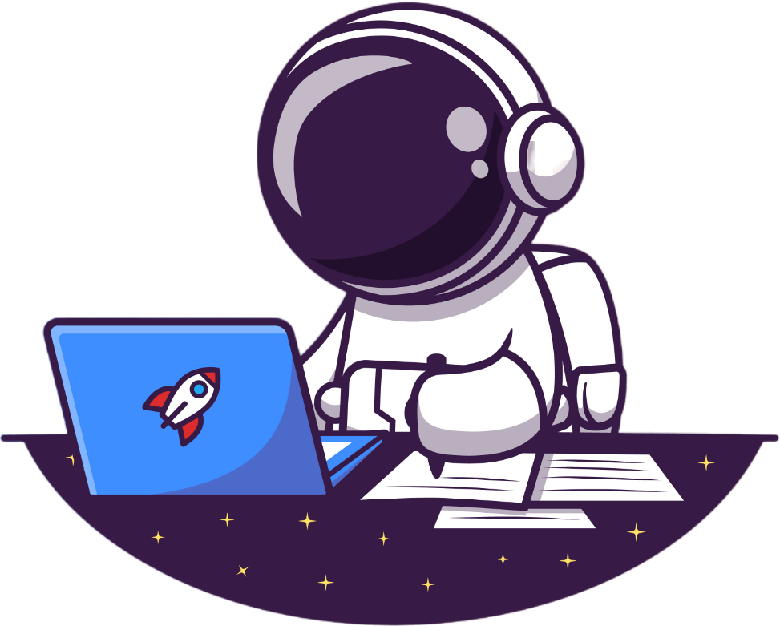
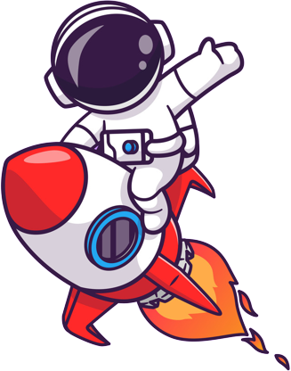
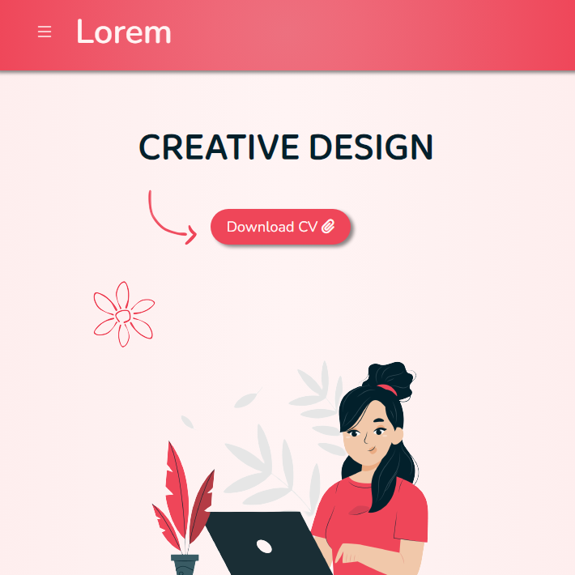
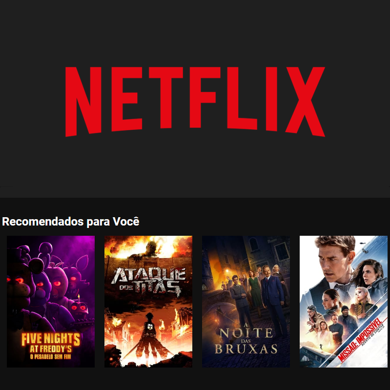
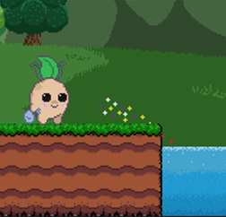
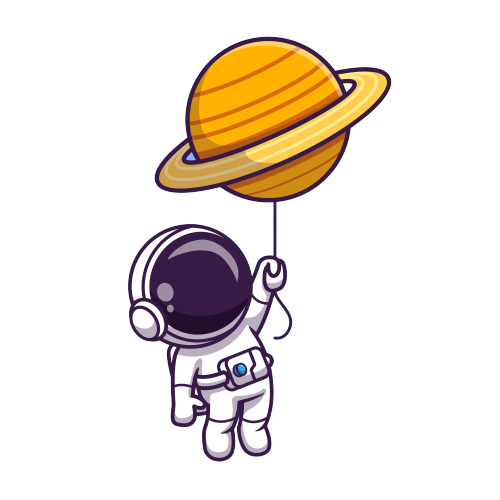

Projeto focado em desenvolver um portfólio base para pessoas que buscam mostrar ao mundo um pouco de seu trabalho.
DEVELOPER FRONTEND
Yan Damasco, nascido em Florianópolis, profissional de desenvolvimento web. Apaixonado por criar experiências digitais incríveis, estou empenhado em transformar ideias em realidade. Explore meu portfólio para conhecer meus trabalhos e entrar em meu universo de design e desenvolvimento.


SOBRE MIM
Meu nome é
Yan Damasco, tenho 23 anos e sou natural de
Florianópolis. Desde que concluí o ensino médio, sempre tive clareza de que minha futura vocação estava na área de
Desenvolvimento Web.
Atualmente, atuo como programador front-end, dedicado a aprimorar a experiência do usuário na web. Empenhado em expandir continuamente meus conhecimentos e habilidades, com o objetivo de me tornar um
Desenvolvedor Full-stack.
Nas horas vagas, estudo programação voltada a desenvolvimento de jogos, assim como Ilustração Digital, Design e estudo de Motores Gráficos, como Unity e Unreal Engine 5.
HABILIDADES
HTML
CSS
JavaScript
React
Bulma
Bootstrap
GIT
GitHub
MySQL
LUA
PROJETOS

Portfólio Base

Clone Netflix
Projeto que busca replicar as principais funções de um aplicativo de streaming, como adquirir dados de uma API e renderizá-los no site.

EcoNabo
Jogo e Site criados como projeto final do curso Programação de Jogos e Sites, pelo Comitê para Democratização da Informática de Santa Catarina.
